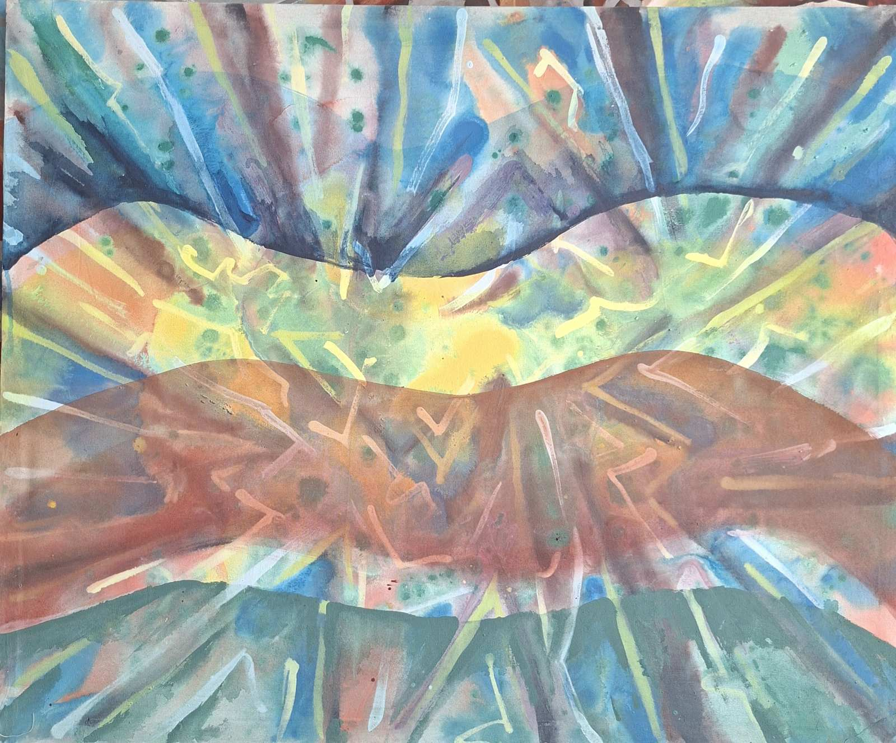
Welcome
Solo Exhibition at the Craft Gallery · Batumi, Georgia
Graphic Design
Ijareteli
View Works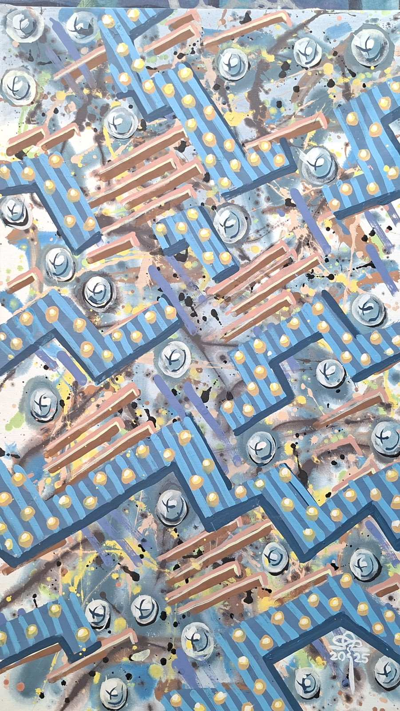
About the Artist
Fridon Bolkvadze was born in August 1963 in the village of Ikareti, Adigeni district. In 1990 he enrolled in the Faculty of Fashion Design at the Tbilisi State Academy of Fine Arts, graduating in 1995. Since 1996 he has lived and worked in Batumi.
Under the literary pseudonym Fridon Ikareteli, he writes poetry, novellas and phantasmagoria. His works have been published in the newspapers "Adjara", "Batumi" and "Social Matsne", and in the magazine "Akhali Era". His poems ranked in the top ten at national poetry competitions.
An active participant in international plein-air sessions and group exhibitions, he is a laureate of numerous awards and has been granted the title of International Ambassador of Sicily, Italy. His works are held in private and state art collections across the world.
Selected Works
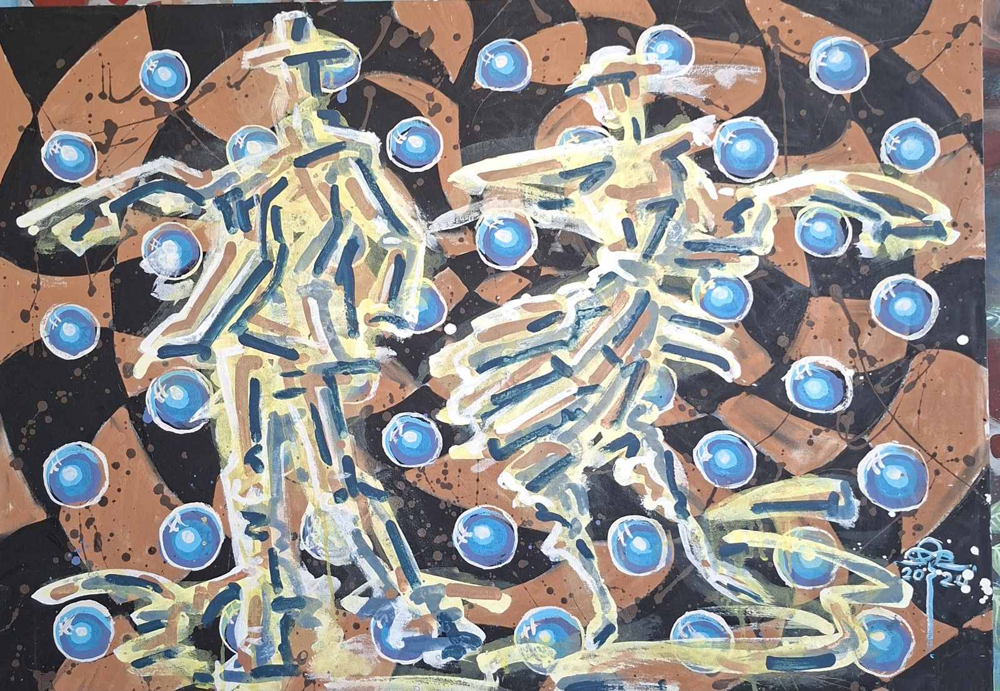
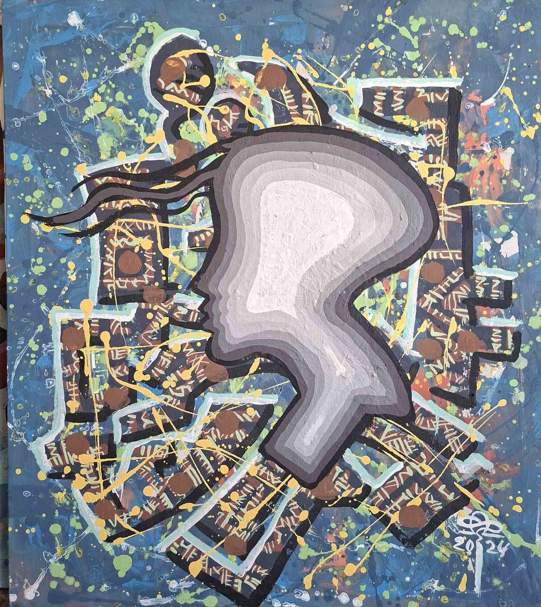
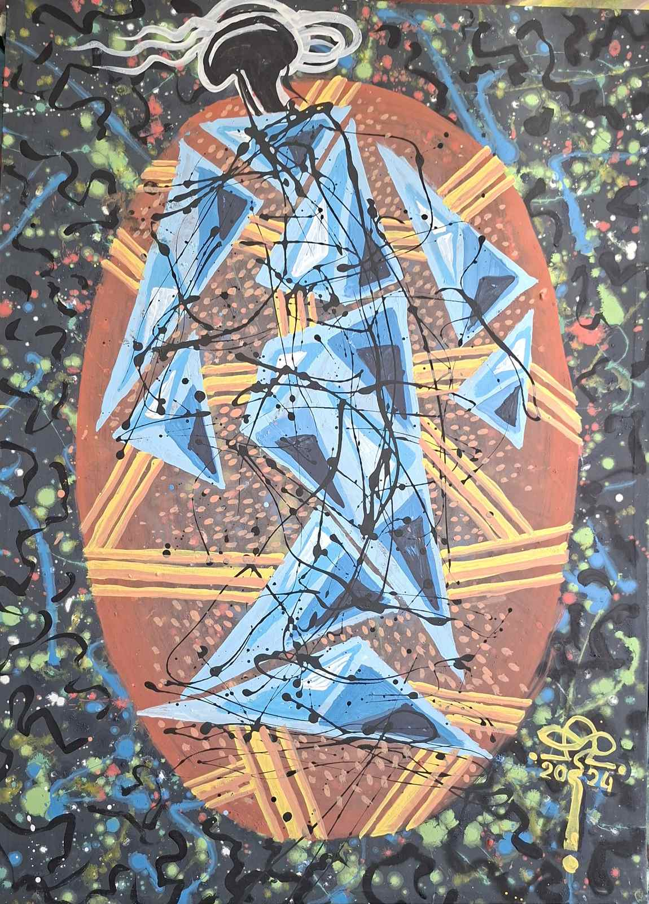
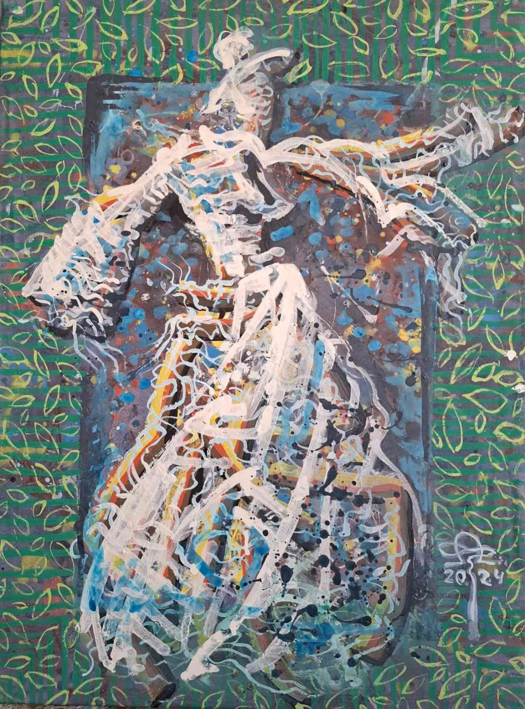
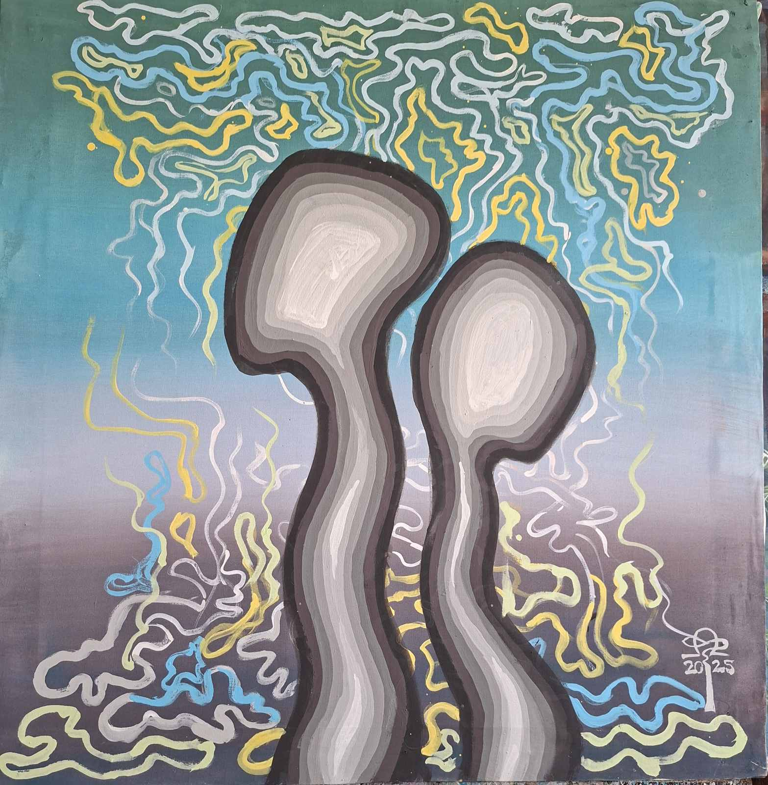
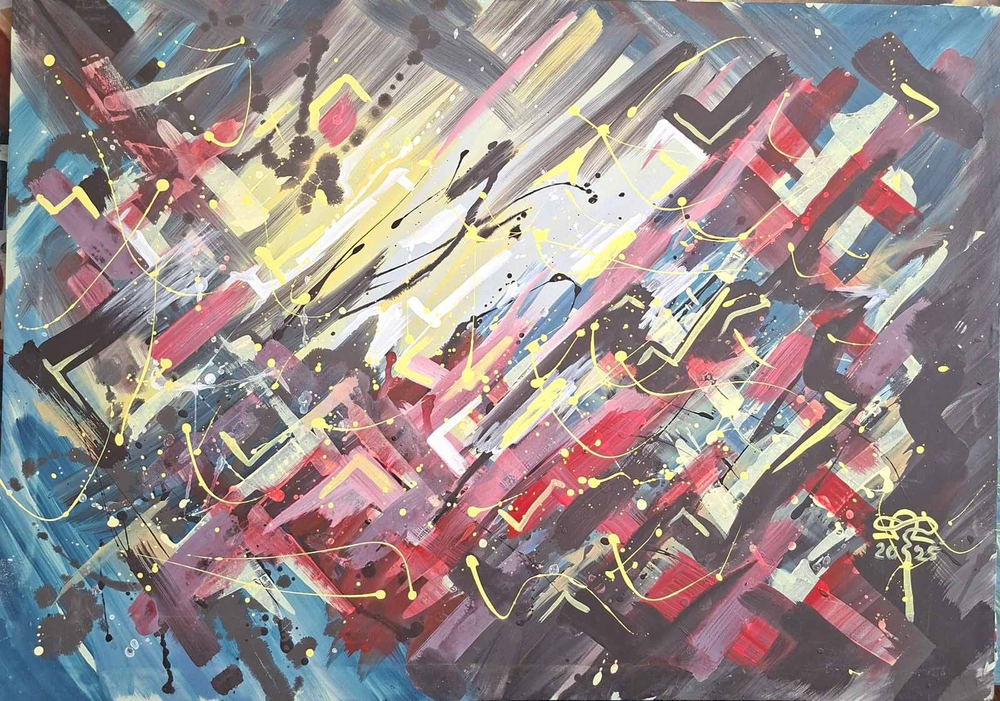
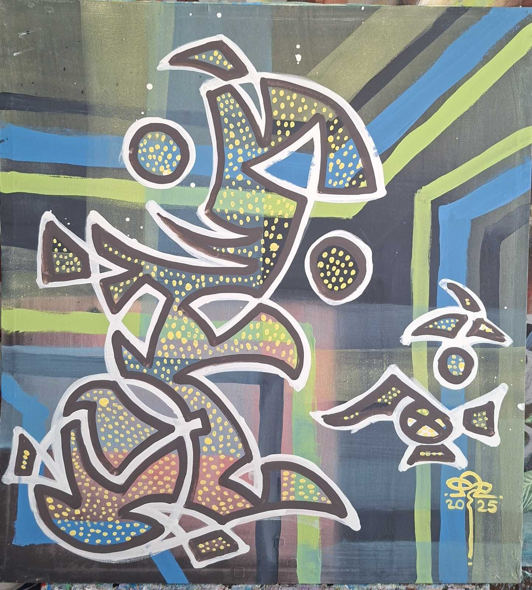
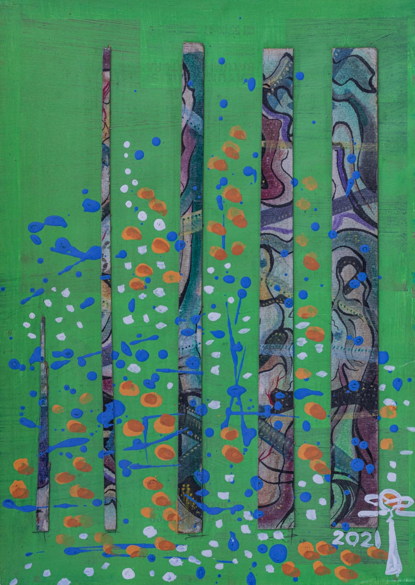
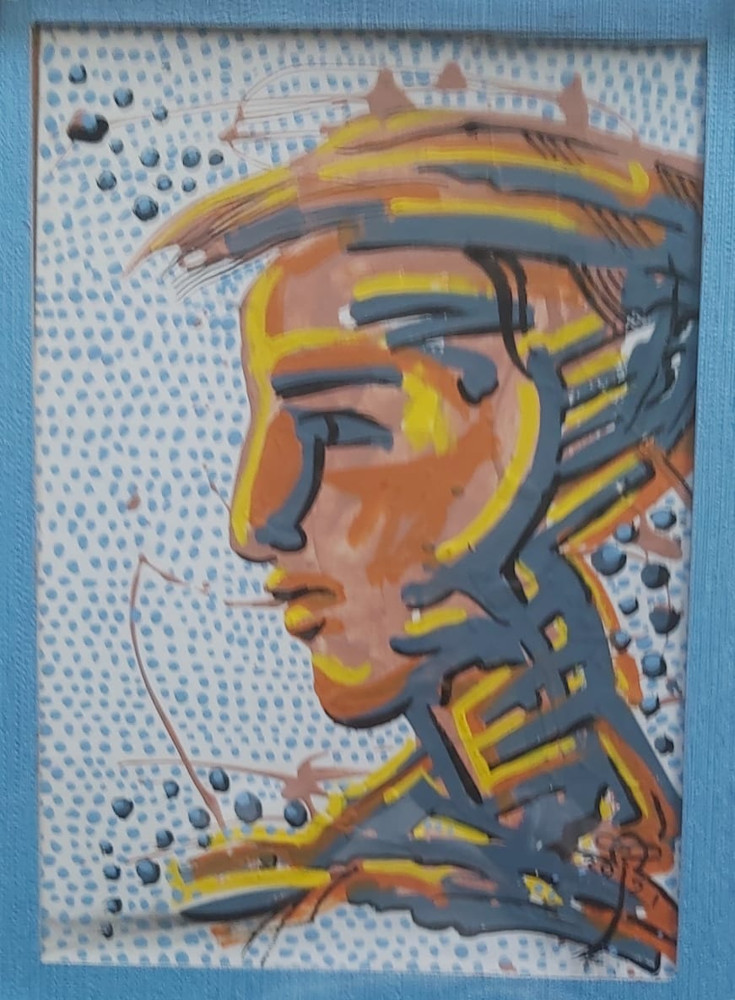
Exhibition History
Studio · Batumi, Georgia
© 2018–2026 MODA ARTS · Fridon Bolkvadze "Ijareteli"